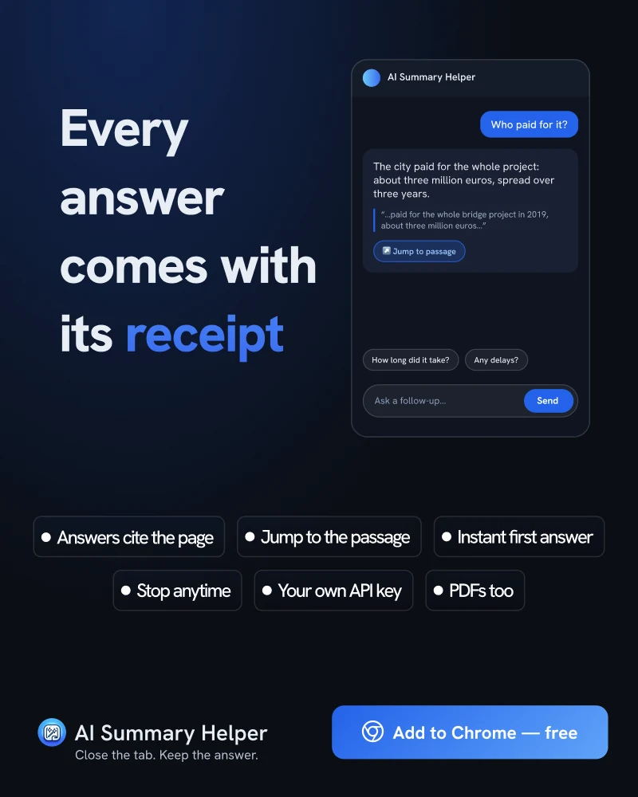

How to Check an AI Summary Against Its Source in 10 Seconds
A summary you can't verify is a guess with good grammar. Here is the habit that fixes it, and what AI Summary Helper does to make it quick.
In 2011, Sparrow, Liu, and Wegner reported in Science that when people expect to be able to look something up later, they remember the fact less and remember where to find it more. Search engines turned out to be a kind of external memory, and we adjust to it.
AI summaries push that adjustment further. You get a clean paragraph, you remember the paragraph, and the page it came from drops out of the picture. That is fine when the summary is right. It is a problem when it isn't, because nothing in a paragraph tells you which sentence is shaky.
The 10-second check
You don't need to re-read the article. You need to look at one passage. The habit is simple:
- Pick the claim you would repeat to someone else. A number, a date, a name, a cause.
- Find the sentence in the source that says it. Not a similar sentence. The one that says it.
- Read the sentence on each side of it. Context is where summaries most often slip: a "may" that became a "will", a forecast that became a fact.
Step two is the slow one when you do it by hand. That is the step worth automating.
What AI Summary Helper does about it
When you ask a follow-up question, the answer comes back with the exact passages from the page that support it. The extension compares each quote against the page text and drops any quote it can't find word for word, so a made-up quotation never shows up as evidence. Click a quote and the page scrolls to that passage and highlights it, if the page is open.
The suggested follow-up questions work the same way. Each one arrives with a short first answer, typed out while the model writes the longer one, so you can read, check, and stop the moment you are satisfied.

What a quote proves, and what it doesn't
Be careful with this one. A matching quote proves that the passage exists on the page. It does not prove the model read it correctly. The answer around the quote is still the model's own wording, so the check in step three still applies: read the neighbouring sentences.
Used that way, the quote is a shortcut to the right paragraph rather than a stamp of approval. That is the point. You spend ten seconds on the part of the article that decides whether the answer holds, not ten minutes on the whole thing.
A habit worth keeping
Pick one answer per article and check it. Over a few weeks you learn how your model behaves: which topics it handles well, where it rounds numbers, whether it softens hedges. That calibration is worth more than any single check.
AI Summary Helper is a free Chrome extension.
Add to Chrome